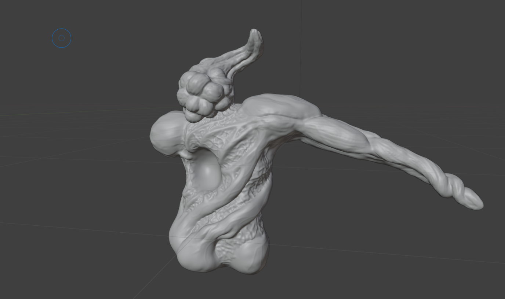
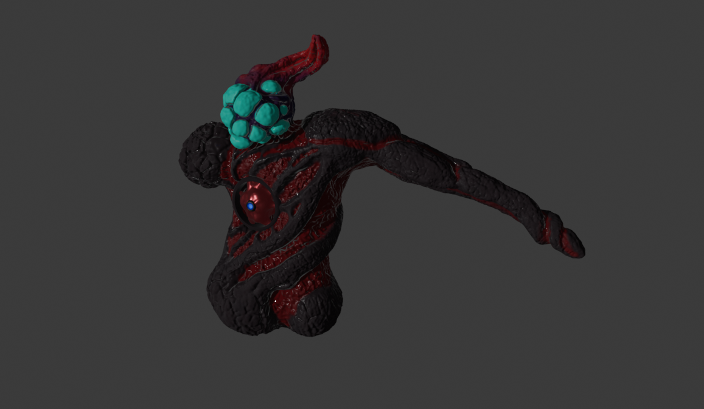

Jeg heter Samuel og går IM på haugalnd vg1. Jeg jobber med spillutvikling på fritiden, og lærer nye ting innen programmering og medie utvikling på skolen
Hjemme har jeg brukt mange timer på å ta kurs innen 3D-utvikling, kunnskap jeg bruker til å lage spill. I tillegg har jeg tatt kurs innen og jobbet mye selv med spillutvikling.
På skolen har jeg programert AI som jeg i senere tid har videreutviklet hjemme og lagd til om til ett monster som skal brukes i spillet.
Ferdigheter
3D-Utvikling i blender
Web-utvikling
Fotoredigering
C# og Unity
Om spillet
En stemningsfull singleplayer-roguelike med stort fokus på skrekk elementer.
tanken med spillet våres er å lage ett skrekkspill som er replayable, men det vi har tenkt er at selve skrekk sjangeren ikke egentlig er så veldig replayable.
Derfor kombinerer vi skrekkspill med roguelike sjangeren, noe som både gjør at å dø ikke blir like kjedelig, i tillegg til at det gjør at spillestilen din må utvikle seg desto lenger du kommer.
Skrekkspill har en tendens til å miste sjarmen og skummelheten sin jo mer du spiller de, og derfor lager vi spillet våres til en roguelike der det ikke lenger er et problem.
Spillet i seg selv går ut på å prøve å overleve så mange dager som mulig. Det vil være et fyrtårn på kartet, og det må du fulle med drivstoff for at det skal holde seg på og lyse vekk tåken.
Du skal kunne finne både penger, ting som kan selges, og items som vil gjr deg sterkere og som er nødvendig for å klare å overleve de senere stadiene i spillet.
Det vil være mange monstere som går rundt på kartet som alle vil kreve forskjellige spillestiler for å overleve.
Noen monstere er farligere enn andre og hver runde vil holde deg på kanten menst du finner ut hvilke monster du spiller mot denne runden.
Hvis du går ut i tåken vil det være vanskeligere å se, og farligere monstere gjemmer seg i tåken.
Kjerne: lydskrekk, lys/mørke, dynamiske jaktfaser
Plattform: PC (Unity 2022+)
Devlogg - Samuel
Hva har jeg jobbet med?
Gjennom reisen min som spillutvikler har jeg hatt et stort fokus på 3D-design i Blender.
For spillet har jeg designet og utviklet mitt eget monster som ligner på en slags alien.
Jeg har også designet et par items, som for eksempel våpen eller verktøy.
AI-prototyper
Det første monsteret jeg lagde er et ganske simpelt monster med en enkel AI.
Den har stort fokus på at du må kunne høre den, både for å vite hvor den er,
og for å vite om den vet hvor du er.

Jeg begynte på modellen uten noe særlig plan og dette var resultatet jeg endte opp med før jeg fikk fargelagt

Her er resultatet etter det ble fargelagt og jeg har brukt noen shadingstartegier jeg lærte på youtube. I tillegg har jeg lagt til ett hjerte
AI grunnlag: Patrulje → Jakt → Søk. Justert lyd (heartbeat) etter avstand.